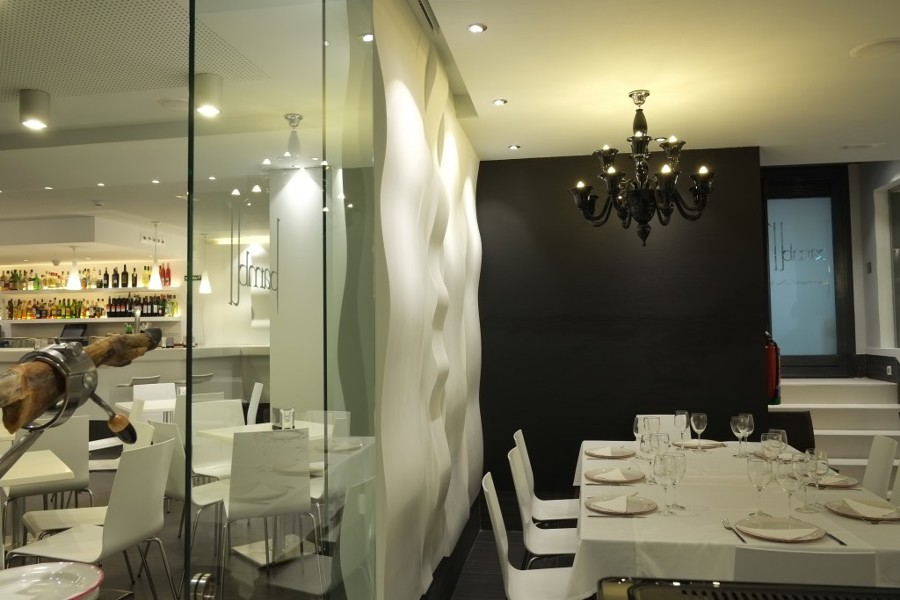

RESTAURANTES DE SALAMANCA
VINODIARIO
TIPOS DE COCINA: Mediterránea, Europea, Española, Saludable
DIETAS ESPECIALES: Opciones vegetarianas, Opciones veganas, Opciones sin gluten
Plaza de los Basilios 1, 37001 Salamanca España
A 0,5km de Plaza Mayor
Precio: €€ - €€€
LA PEPITA
TIPOS DE COCINA: Americana, Internacional
DIETAS ESPECIALES: Opciones vegetarianas, Opciones veganas, Opciones sin gluten
Plaza del Angel, 2, 37001 Salamanca España
A 0,1 km de Plaza Mayor
Precio: €€ - €€€
EN LA PARRA
TIPOS DE COCINA: Mediterránea, Europea, Española
DIETAS ESPECIALES: Opciones sin gluten
Calle San Pablo 80, 37008 Salamanca España
A 0,5 km de Plaza Mayor
Precio: €€€€
LA JARA
TIPOS DE COCINA: Mediterránea, Española
DIETAS ESPECIALES: Opciones vegetarianas
Calle San Justo, 6, 37001 Salamanca España
A 0,2 km de Plaza Mayor
Precio: €€€€
LA HOJA 21
TIPOS DE COCINA: Española, Saludable
DIETAS ESPECIALES: Opciones vegetarianas, Opciones sin gluten
Calle San Pablo, 21, 37002 Salamanca España
A 0,4 km de Plaza Mayor
Precio: €€€€
ZAZU BISTRO
TIPOS DE COCINA: Mediterránea, Europea, Española
DIETAS ESPECIALES: Opciones vegetarianas, Opciones veganas, Opciones sin gluten
Plaza Libertad 8, 37002 Salamanca España
A 0,1 km de Plaza Mayor
Precio: €€ - €€€
CORTE Y CATA
TIPOS DE COCINA: Mediterránea, Europea, Española, Fusión
DIETAS ESPECIALES: Opciones vegetarianas, Opciones veganas, Opciones sin gluten
Calle Serranos 1, 37008 Salamanca España
A 0,4 km de Plaza Mayor
Precio: €€ - €€€
EL LAUREL
TIPOS DE COCINA: Mediterránea, Europea, Española
DIETAS ESPECIALES: Opciones vegetarianas, Opciones veganas, Opciones sin gluten
Calle San Pablo 49, Salamanca España
A 0,6 km de Plaza Mayor
Precio: €€ - €€€

RESTAURANTE ISIDRO
TIPOS DE COCINA: Marisco, Española, Saludable
DIETAS ESPECIALES: Opciones vegetarianas, Opciones veganas, Opciones sin gluten
Calle Pozo Amarillo, 23 Comida para llevar, 37001 Salamanca España
A 0,2 km de Plaza Mayor
Precio: €€ - €€€
BAMBÚ TAPAS & BRASAS
TIPOS DE COCINA: Bar, Mediterránea, Europea, Española
DIETAS ESPECIALES: Opciones vegetarianas, Opciones sin gluten
Calle Prior 4, 37002 Salamanca España
A 0,1 km de Plaza Mayor
Precio: €€ - €€€
CONTACTOS
| Restaurante | Telefono | |
|---|---|---|
| Vinodiario | 923 61 49 25 | - |
| La Pepita | 923 60 25 90 | salamanca@lapepitaburguerbar.com |
| En la Parra | 923 06 47 83 | info@restaurantenlaparra.com |
| La Jara | 655 85 65 02 | restaurante.lajarasalamanca@gmail.com |
| La Hoja 21 | 923 26 40 28 | INFO@lahoja21.com |
| Zazu Bistro | 923 26 16 90 | info@restaurantezazu.com |
| Corte y Cata | 923 05 53 42 | info@corteycata.es |
| El Laurel | 923 26 06 01 | - |
| Restaurante Isidro | 923 26 28 48 | restauranteisidro@hotmail.com |
| Bambú | 923 26 00 92 | redesbambu@gmail.com |